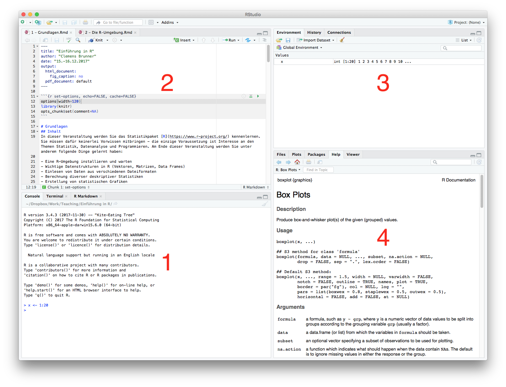
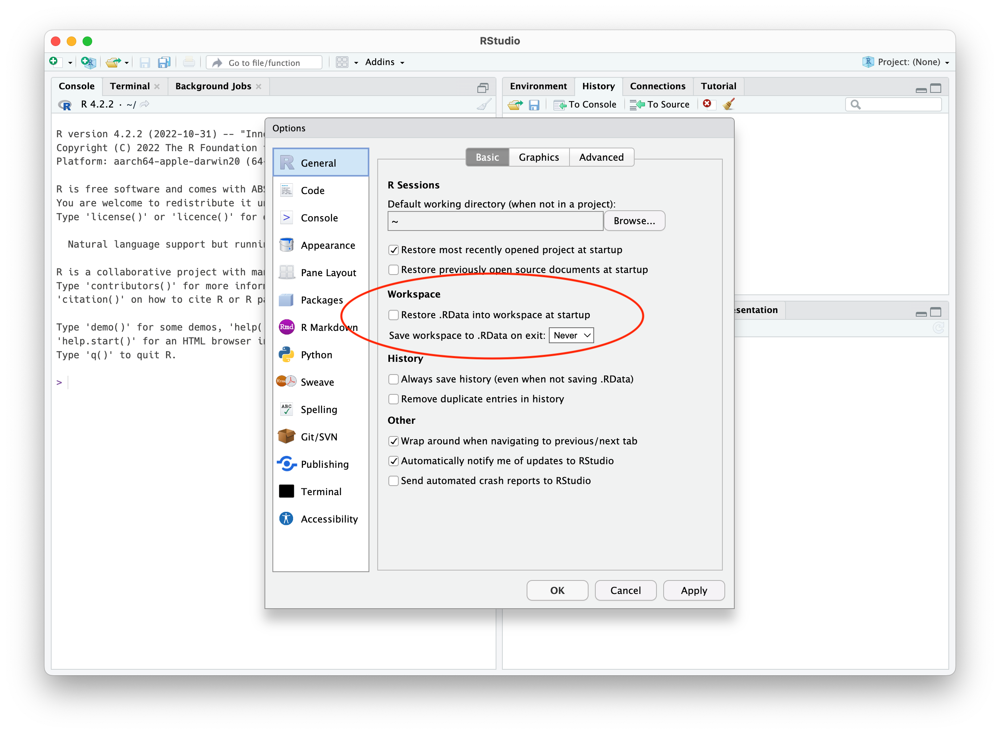
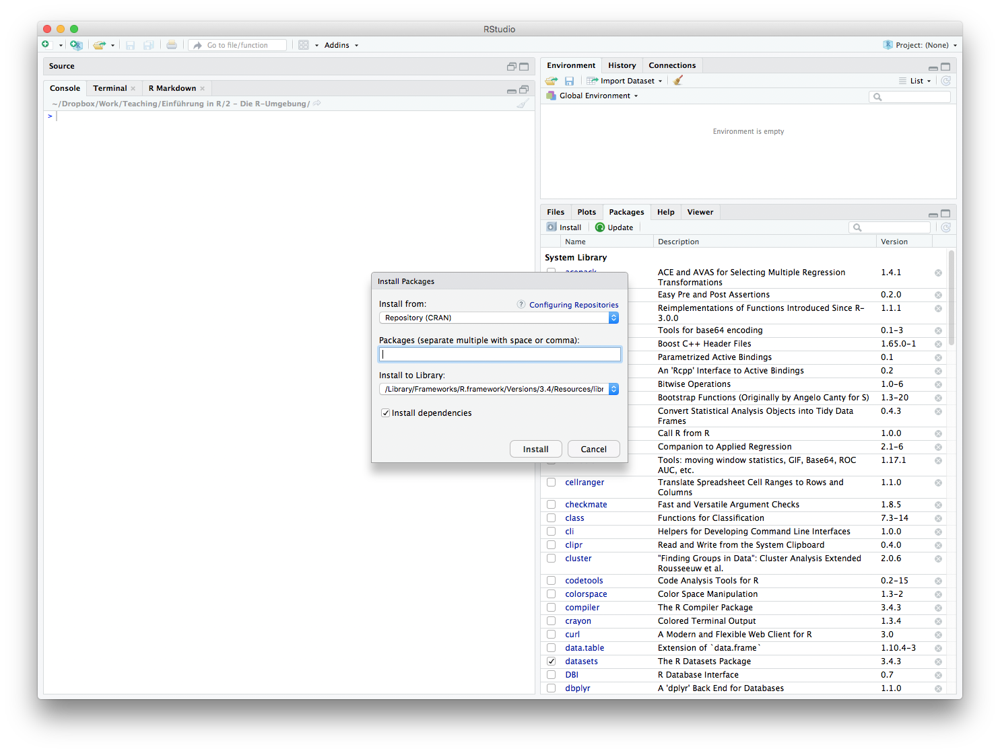
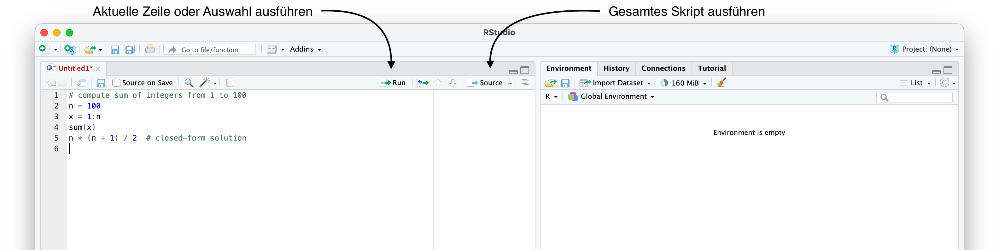
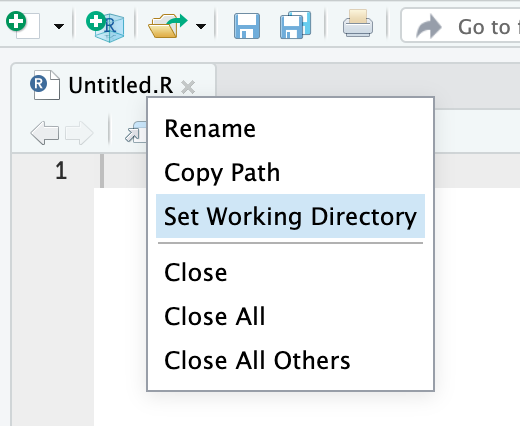

library()RStudio
Bereits in der vorigen Einheit haben wir die grafische Benutzeroberfläche RStudio installiert und verwendet. RStudio setzt eine funktionierende Installation von R voraus. Das Programmfenster von RStudio ist in der Standardeinstellung in vier Bereiche unterteilt (wobei oft nur drei Bereiche sichtbar sind):
- Links unten befindet sich die Console (die anderen Tabs sind für uns nicht relevant). Hier wartet R auf unsere Eingaben.
- Links oben befindet sich der Editor (falls zumindest eine Datei geöffnet ist). Ansonsten nimmt die Console diesen Platz ein.
- Rechts oben gibt es eine Übersicht aller geladenen Objekte (Environment) und eine Liste aller jemals eingegebenen Befehle (History) (die anderen Tabs sind für uns hier nicht von Bedeutung). Auf die History kann man übrigens auch in der Console mit den Tasten ↑ bzw. ↓ zugreifen und vor der erneuten Bestätigung mit der Eingabetaste auch editieren.
- Rechts unten werden wahlweise der Inhalt des aktuellen Verzeichnisses (Files), grafische Ausgaben (Plots), eine Paketverwaltung (Packages) oder ein Hilfefenster (Help) angezeigt (die anderen Tabs sind für uns nicht relevant).

Tipp
Die Aufteilung der Bereiche kann in den Einstellungen umfangreich angepasst werden. Wenn Sie z.B. die Console gerne rechts unten haben möchten, können Sie das dort festlegen.
Wichtig
Die meisten Einstellungen von RStudio haben vernünftige Standardwerte, aber die folgenden zwei Punkte sollten Sie unbedingt ändern. Gehen Sie dazu in die Einstellungen (Tools – Global Options) und ändern Sie diese beiden Optionen:
- “Restore .RData into workspace at startup” sollte deaktiviert sein.
- “Save workspace to .RData on exit” sollte auf Never gesetzt sein.

Dies bewirkt, dass jeder Neustart von RStudio auch eine komplett frische R-Sitzung generiert, was für die Reproduzierbarkeit von Analysen unerlässlich ist.
Pakete
Pakete erweitern den Funktionsumfang von R. Werksmäßig wird R nur mit einer Handvoll an Paketen ausgeliefert – sobald man damit nicht mehr auskommt, kann man sehr einfach zusätzliche Pakete hinzufügen. Die meisten Zusatzpakete sind im Comprehensive R Archive Network (CRAN) verfügbar. Wenn ein Paket einmal installiert ist, kann es danach jederzeit aktiviert und verwendet werden. Das bedeutet also, dass folgende zwei voneinander abhängige Schritte auszuführen sind:
- Installieren eines neuen Pakets (nur ein Mal)
- Aktivieren eines installierten Pakets (vor jeder Verwendung, d.h. ein Mal pro R-Sitzung)
Im CRAN gibt es tausende Pakete, und deswegen kann es mitunter schwierig sein, ein passendes bzw. das gesuchte Paket zu finden. Eine sehr praktische Übersicht gibt es auf CRAN Task Views. Hier werden ausgewählte Pakete nach Anwendungsgebieten thematisch gruppiert dargestellt. Zusätzlich ist eine Internet-Suche nach dem gewünschten Thema in Verbindung mit R sehr häufig zielführend.
Zur Paketverwaltung gibt es zwei Möglichkeiten: entweder man verwendet den Bereich Packages in RStudio, oder man benutzt R-Befehle dafür.
Paketverwaltung in RStudio
RStudio bietet im Bereich Packages (im Panel rechts unten) eine Liste aller installierten Pakete. Hier ist auch ersichtlich, welche Pakete gerade aktiviert sind (durch Setzen/Entfernen des Häkchens vor einem Paket kann dieses aktiviert/deaktiviert werden).
In dieser Ansicht kann man durch Klicken auf Update installierte Pakete aktualisieren. Dies sollte man von Zeit zu Zeit auch tun, und zwar unabhängig von eventuellen Updates der verwendeten R-Version.
Neue Pakete installiert man durch Klicken auf Install. Wenn man in das Feld Packages die Anfangsbuchstaben des gesuchten Pakets eingibt, wird automatisch eine Liste aller passenden Pakete vorgeschlagen. Ein bereits installiertes Paket kann man durch Klicken auf das hellgraue X in der rechten Spalte der Paketliste wieder deinstallieren.

Paketverwaltung mit R-Befehlen
Prinzipiell interagiert man mit R über Textbefehle in der Console. Daher ist es nicht überraschend, dass auch die Paketverwaltung mit speziellen R-Befehlen funktioniert. Tatsächlich verwendet die gerade beschriebene Paketverwaltung in RStudio einfach entsprechende R-Befehle im Hintergrund (diese sind auch in der Console ersichtlich).
Eine Liste aller installierten Pakete bekommt man mit:
Diese Liste entspricht der Darstellung im Bereich Packages in RStudio. Eine Liste aller aktivierten (geladenen) Pakete erhält man mit:
search()[1] ".GlobalEnv" "package:stats" "package:graphics" "package:grDevices" "package:utils"
[6] "package:datasets" "package:methods" "Autoloads" "package:base" Ein neues Paket aus dem CRAN (z.B. psych) installiert man mit:
install.packages("psych")Zu beachten ist, dass man den Namen des zu installierenden Paketes in Anführungszeichen angeben muss. Ein bereits installiertes Paket aktiviert man mit:
library(psych)Hier kann man die Anführungszeichen um den Paketnamen weglassen.
Die Programmiersprache R
Scripts
Befehle in der R-Console einzugeben ist praktisch, wenn man neue Dinge interaktiv ausprobieren möchte bzw. nur schnell Kleinigkeiten berechnen will. Möchte man eine reproduzierbare Datenanalyse durchführen, dann sollte man die dafür notwendigen Befehle in einem sogenannten R-Script abspeichern. Damit kann man die Analyse später jederzeit wiederholen. Ein R-Script ist nichts anderes als eine einfache Textdatei mit der Endung .R.
In jeder Zeile eines R-Scripts befindet sich (meist) genau ein R-Befehl. Wenn man das Script ausführt, werden alle Zeilen vom Anfang bis zum Ende der Reihe nach ausgeführt. In RStudio kann man ein gesamtes Script durch Klicken auf die Schaltfläche “Source” (bzw. “Source with Echo”) ausführen. Möchte man nur die aktuelle Zeile bzw. die markierten Zeilen ausführen, kann man dies durch Klicken auf die Schaltfläche “Run” tun (dafür gibt es auch das Tastenkürzel StrgEnter unter Windows/Linux bzw. ⌘Enter unter macOS). Praktischerweise springt der Cursor danach zum nächsten Befehl im Script, welcher dann auf Wunsch wieder ausgeführt werden kann.
Die folgende Abbildung zeigt ein kurzes R-Script, welches im Editor-Bereich von RStudio geöffnet ist:

Tipp
Wenn man in einem Script Befehle aus zusätzlichen Paketen benötigt, muss man diese Pakete im Script auch mittels library(package) aktivieren. Am besten geschieht dies ganz am Anfang des Scripts.
Wichtig
Installieren Sie Pakete niemals in einem Script (mittels install.packages("package"))! Das Paket würde bei jedem Ausführen des Scripts neu installiert werden (inklusive Download aus dem Internet), was definitiv vermieden werden sollte. Die Installation von Paketen wird also immer wie oben beschrieben manuell mit RStudio oder in der Console durchgeführt.
Arbeitsverzeichnis
Das Arbeitsverzeichnis, also jenes Verzeichnis in dem die aktuelle R-Sitzung ausgeführt wird, erhält man mit dem Funktionsaufruf:
getwd()Dieses Arbeitsverzeichnis (Working Directory) ist wichtig, da R diverse Dateien (wie z.B. Scripts oder Daten) immer in diesem (oder relativ zu diesem) Verzeichnis erwartet. Alle Dateien im aktuellen Arbeitsverzeichnis kann man mit dir() ausgeben lassen (RStudio zeigt diese rechts unten im Bereich Files an).
Tipp
Der Titel der R-Console in RStudio zeigt ebenfalls das aktuelle Arbeitsverzeichnis an. Der Name ~ ist eine Abkürzung für den persönlichen Ordner.
Der Befehl setwd("/path/to/working/directory") setzt das aktuelle Arbeitsverzeichnis auf den angegebenen Wert (im Beispiel das fiktive Verzeichnis /path/to/working/directory). Hierbei ist zu beachten, dass Verzeichnisse auch in Windows durch einen normalen Schrägstrich / und nicht durch einen umgekehrten Schrägstrich (Backslash) \ voneinander zu trennen sind.
In RStudio hat man aber mindestens drei Alternativen, das Arbeitsverzeichnis auch mit der grafischen Oberfläche zu setzen:
- Menü Session – Set Working Directory – Choose Directory…
- Navigieren zum gewünschten Verzeichnis im Bereich Files (Bereich rechts unten) und dann Klick auf More – Set As Working Directory
- Falls eine Script-Datei im Editorbereich geöffnet ist, kann man auf den Dateinamen im Tab rechtsklicken und Set Working Directory auswählen (dies setzt das Arbeitsverzeichnis auf jenes Verzeichnis, in dem das Script abgespeichert ist)

Wichtig
Bevor Sie ein Script ausführen, sollten Sie das Arbeitsverzeichnis korrekt setzen (üblicherweise auf das Verzeichnis, in dem das Script abgespeichert ist). Führen Sie dies allerdings nicht automatisiert im Script selbst durch, denn das Script soll auch auf anderen Umgebungen laufen, wo es Ihr spezifisches Verzeichnis vielleicht nicht gibt.
Tipp
Wenn Sie ein R-Script per Doppelklick (im Windows Explorer oder macOS Finder) öffnen, wird RStudio geöffnet und das Arbeitsverzeichnis automatisch auf das Verzeichnis gesetzt, in dem sich das Script befindet.
Workspace
Alle selbst erstellten bzw. geladenen Objekte (Variablen und Daten) fasst man unter dem Begriff Workspace zusammen. Man kann ihn mit folgendem Befehl anzeigen:
ls()In einer frisch gestarteten R-Sitzung ist der Workspace leer (falls nicht, haben Sie vermutlich die oben erwähnten Einstellungen nicht korrekt gesetzt). Dieses Verhalten ist für die Reproduzierbarkeit von Analysen eine wichtige Voraussetzung. In RStudio wird der Workspace auch im Bereich Environment (rechts oben) angezeigt .
Syntax
Unter Syntax versteht man die Regeln, wie man aus einzelnen Zeichen gültige R-Befehle erstellen kann. Um die Syntax von R kennenzulernen, betrachten wir das folgende kurze Beispiel-Script:
# compute sum of integers from 1 to 100
n = 100
x = 1:n
sum(x)
n * (n + 1) / 2 # closed-form solutionMan erkennt bereits in diesen wenigen Zeilen die grundlegenden Regeln. Prinzipiell wird jeder Befehl in eine eigene Zeile geschrieben.
Kommentare
Kommentare, d.h. alle Zeichen ab # bis zum Zeilenende, werden von R nicht ausgeführt, sondern einfach komplett ignoriert. Dennoch sind Kommentare extrem wichtig, da Sie zum Verstehen des Codes beitragen können – fügen Sie daher bei komplizierteren Berechnungen immer erklärende Kommentare hinzu!
Variablen und Objekte
Der Zuweisungsoperator in R ist = oder <-. Damit kann man Werte (oft auch als Objekte bezeichnet) Variablen zuweisen, welche man dann später wieder verwenden kann (um z.B. damit weiterzurechnen). Im Beispiel wird also mit n = 100 der Wert 100 der Variablen n zugewiesen. Im gesamten obigen Beispiel-Script werden daher zwei Variablen namens n und x erstellt.
Hinweis
Es ist egal, ob man = oder <- für Zuweisungen verwendet. Man sollte aber konsistent sein und immer nur einen der beiden Zuweisungsoperatoren verwenden. In diesen Unterlagen wird = benutzt, weil man weniger tippen muss und die meisten anderen Programmiersprachen ebenfalls = verwenden.
R unterscheidet streng zwischen Groß- und Kleinschreibung, d.h. die Variable N ist nicht gleich der Variablen n. Neben Buchstaben können auch Ziffern, Unterstriche und sogar Punkte (nicht empfohlen) für Variablennamen verwendet werden.
Funktionen
Eine Funktion ist ein Mini-Script, welches man durch Aufrufen ausführen kann. Im obigen Beispiel ist sum eine Funktion. Zum Aufrufen einer Funktion ist ein Klammernpaar () nach dem Funktionsnamen notwendig. Eventuelle Argumente (die man benötigt, wenn die Funktion zusätzliche Informationen braucht) werden innerhalb dieser Klammern übergeben. Mehrere Argumente werden mit einem , voneinander getrennt.
Mit dem Befehl sum(x) wird also die Funktion sum mit dem Argument x aufgerufen. Es gibt auch Funktionen, die keine Argumente benötigen – das runde Klammernpaar ist aber trotzdem notwendig (z.B. library() ruft die Funktion library ohne Argumente auf). Weitere Beispiele für Funktionsaufrufe ohne Argumente, die wir bereits kennengelernt haben, sind search(), getwd(), dir() und ls().
Hinweis
In diesen Unterlagen werden Funktionsnamen mit nachfolgenden Klammern () geschrieben, um deutlich zu machen, dass es sich dabei um eine Funktion handelt.
Mit Objekten und Funktionen hätten wir bereits die wichtigsten beiden Konzepte in R besprochen. Zusammenfassend kann man also sagen (aus John M. Chambers, Extending R, Chapman & Hall/CRC, 2016):
- Alles, was in R existiert, ist ein Objekt.
- Alles, was in R passiert, geschieht durch Aufrufen einer Funktion.
Hilfe
R beinhaltet eine sehr gute integrierte Hilfe zu allen möglichen Themen und Befehlen. In RStudio sind im Bereich Help alle Hilfethemen gruppiert – es bietet sich an, einmal in diesem Hilfefenster zu stöbern.
Am häufigsten benötigt man aber Hilfe zu einem konkreten Befehl. Wenn man z.B. Informationen zur Funktion mean() braucht, gibt man in der Console folgendes ein:
help(mean)Alternativ und kürzer geht das mit:
?meanDer Hilfetext für eine Funktion enthält alle notwendigen Informationen – wenn Sie eine neue Funktion erstmalig verwenden möchten, ist ein Blick in die Hilfe sehr zu empfehlen.
Die Hilfetexte sind alle sehr ähnlich aufgebaut. Nach einer kurzen Beschreibung (Description) sieht man unter Usage wie man die Funktion verwendet (aufruft). Hier ist in unserem Beispiel zu lesen:
mean(x, ...)Gleich danach folgen diese beiden Zeilen mit mehr Details:
## Default S3 method:
mean(x, trim = 0, na.rm = FALSE, ...)Hier erkennt man, dass die Funktion ein Argument namens x erwartet. Dieses Argument ist verpflichtend, d.h. wenn man es nicht angibt, bekommt man eine Fehlermeldung (probieren Sie es in der Console aus, indem Sie mean() eintippen). Dies sieht man am Hilfetext, weil kein Standardwert für x ersichtlich ist. Im Gegensatz dazu sind die nächsten beiden Argumente trim und na.rm optional, d.h. man muss sie nicht angeben, denn in diesem Fall werden deren Standardwerte verwendet (trim hat den Wert 0 und na.rm hat den Wert FALSE).
Die Bedeutung der Argumente wird im Abschnitt Arguments genau beschrieben. Der Wert, der von der Funktion berechnet und zurückgegeben wird, wird im Abschnitt Value beschrieben. Danach folgen Literaturhinweise, verwandte Funktionen und schließlich Beispiele. Diese Beispiele kann man auch kopieren und in der Console ausführen (oder einfach durch Klicken auf “Run examples” im Hilfe-Fenster ausführen).
Möglichkeiten zum Aufrufen einer Funktion
Nachdem wir nun Funktionen sowie die integrierte Hilfe besprochen haben, sehen wir uns abschließend noch an, mit welchen unterschiedlichen Varianten wir eine Funktion aufrufen können.
Einer Funktion kann man Argumente auf zwei verschiedene Arten übergeben:
- Man übergibt nur die Werte in der richtigen Reihenfolge (wie von der Funktion laut Hilfe erwartet), z.B.
mean(1). - Man verwendet die Namen der Argumente gemeinsam mit deren Werten, z.B.
mean(x=1). Die Reihenfolge ist dann egal.
Sehen wir uns einige Beispiele für korrekte Aufrufe der Funktion mean() an. Vorausgesetzt ist hier, dass es eine Variable x gibt, von deren Werten wir den Mittelwert berechnen möchten (eine detaillierte Erklärung zur Funktion c() folgt in der nächsten Einheit).
Wir erstellen also zunächst die Variable (das Objekt) x:
x = c(-14, 2, 3, 4, 5, 6, 7, 28, 99)Jetzt sehen wir uns an, mit welchen unterschiedlichen Varianten wir die Funktion mean() aufrufen können (die Kommentare zu den Aufrufen geben jeweils die Werte aller Argumente an, auch und vor allem wenn diese nicht explizit übergeben wurden und dadurch den Standardwerten entsprechen):
mean(x) # x=x, trim=0, na.rm=FALSE[1] 15.55556mean(x, 0.1) # x=x, trim=0.1, na.rm=FALSE[1] 15.55556mean(x, 0.2, TRUE) # x=x, trim=0.2, na.rm=TRUE[1] 7.857143mean(x, na.rm=TRUE) # x=x, trim=0, na.rm=TRUE[1] 15.55556mean(x, trim=0.2, na.rm=TRUE) # x=x, trim=0.2, na.rm=TRUE[1] 7.857143mean(x=x, na.rm=TRUE, trim=0.3) # x=x, trim=0.3, na.rm=TRUE[1] 5mean(x, 0.2, na.rm=TRUE) # x=x, trim=0.2, na.rm=TRUE[1] 7.857143Anzumerken ist hier, dass der tatsächlich übergebene Wert nicht denselben Namen wie das Argument haben muss. Im obigen Beispiel ist dies zufälligerweise der Fall (sowohl der Funktionsparameter als auch der übergebene Wert heißen x), aber das ist nicht erforderlich. Im Grunde sind nur die übergebenen Werte relevant, ob diese Werte einen Namen haben oder nicht spielt keine Rolle. D.h. man könnte mean() auch wie folgt aufrufen:
mean(c(-14, 2, 3, 4, 5, 6, 7, 28, 99))[1] 15.55556mean(x=c(-14, 2, 3, 4, 5, 6, 7, 28, 99))[1] 15.55556y = c(-14, 2, 3, 4, 5, 6, 7, 28, 99)
mean(y)[1] 15.55556mean(x=y)[1] 15.55556Literatur
Bücher
Tutorials und Dokumentation
Online-Kurse
Artikel
Falls Sie sich für die historische Entwicklung von R interessieren, finden Sie hier einen spannenden Überblick von John M. Chambers, einem der Mitentwickler von R.
Übungen
Übung 1
Installieren Sie die Pakete tidyverse, Hmisc und psych – welche R-Befehle verwenden Sie dafür? Nennen Sie die Versionsnummern dieser Pakete. Mit welchen Befehlen können Sie die installierten Pakete anschließend aktivieren?
Übung 2
Zeigen Sie die Hilfe zur Funktion help() an. Welche zwei Möglichkeiten haben Sie dafür?
Übung 3
Wie sieht ein Funktionsaufruf in R aus?
Übung 4
Erstellen Sie in RStudio ein einfaches Script mit dem Namen my_first_script.R. Fügen Sie folgende Elemente in dieses Script ein:
- Eine Kommentarzeile mit dem Inhalt “Übung 4”
- Aktivieren des Pakets
Hmisc - Berechnung des Mittelwerts der Zahlen 45, 66, 37, 54, 7 und 22 (nur mit Grundrechenarten)
Das fertige Script sollte also aus drei Zeilen bestehen (Sie könnten zur Erhöhung der Übersichtlichkeit aber zusätzliche leere Zeilen einfügen).
Führen Sie zur Kontrolle das gesamte Script aus – es darf dabei kein Fehler auftreten!
Übung 5
Lesen Sie die Hilfe zur Funktion sum() und beantworten Sie dann folgende Fragen:
- Wie viele verpflichtende Argumente benötigt diese Funktion?
- Wie viele optionale Argumente hat diese Funktion?
- Was ergibt der Aufruf
sum()und warum (beachten Sie dazu auch das Ergebnis vonmean())? - Erklären Sie, warum
sum(1, 2, 3)das korrekte Ergebnis liefert, abermean(1, 2, 3)nicht! - Was passiert, wenn Sie nur
sumin der Console ausführen (also ohne das Klammernpaar)?